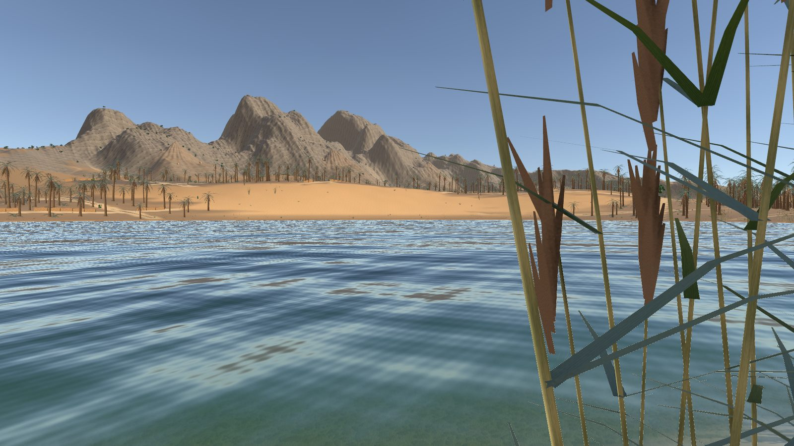

Axion
An offline Arduino and circuit simulator with modular parts and support for multiple microcontrollers.

Game environments · Simulators · Tools
I'm a first-year B.Tech EECS student at IISER Bhopal. I make Unity environments, Arduino simulations and small Python and quantum-computing projects.
Featured · Unity asset
All images rendered in-editor in Unity 6 (URP). Click to enlarge.
A ready-to-use 4 × 4 km desert island for Unity's Universal Render Pipeline. Four desert landscapes from around the world blend across one island, and a setup wizard builds it into your scene in about a minute.
URP 17 · Unity 6. Built-in and HDRP not supported.
8 PBR terrain layers (albedo, normal, mask) painted from biome masks, slope and height.
Custom shader with seabed refraction, depth colour, shore foam and sun glitter.
Setup wizard, biome query API, shoreline arrival points, first-person explorer.
More work
Electronics, simulation and code. Each one links to its source on GitHub.
An offline Arduino and circuit simulator with modular parts and support for multiple microcontrollers.
Small-scale delivery routing solved with QAOA, using QUBO formulations and Ising models.
Simple unit and number-base conversions for Python, published on PyPI.
An arcade game on two Arduino Unos, played with an IR remote and sensor, built in Tinkercad.
PIN authentication, a servo lock, RGB status lights and IR remote control, in three versions.
Throttle control, motor drivers and servo steering for a simulated four-wheel-drive EV.
An Arduino oscilloscope that draws its trace across two stacked I2C LCD screens.
Digital logic designs written in Verilog.
More on github.com/cobrapy-x.
About
I study B.Tech in Electrical Engineering and Computer Science at IISER Bhopal. I like building things that simulate the real world, from circuits and vehicles to whole landscapes.
Sundered Desert is my first Unity asset. Its terrain, textures and models are generated procedurally by code I wrote with the help of an AI assistant, then designed, reviewed and tested by me in Unity.
Contact
Bought Sundered Desert? See the support page first; most answers are there.